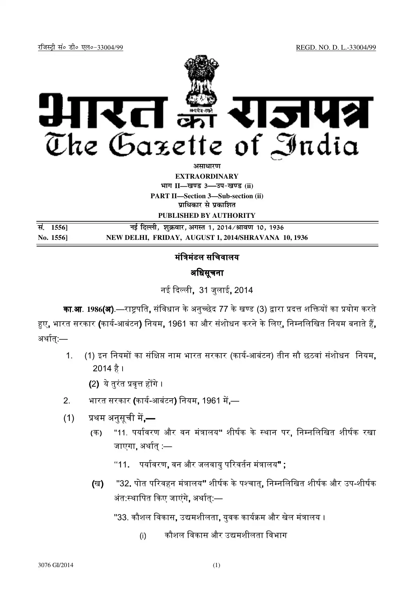
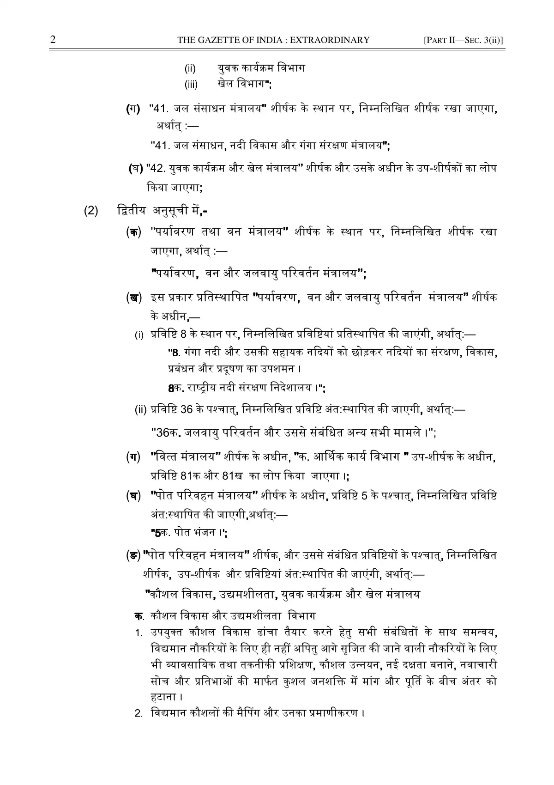
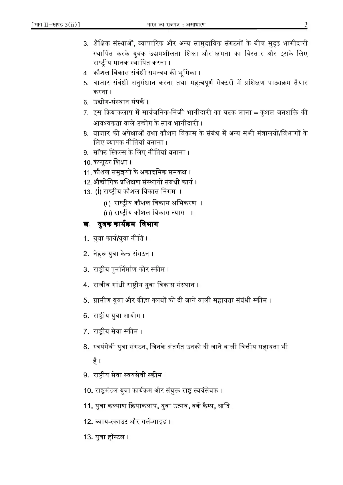
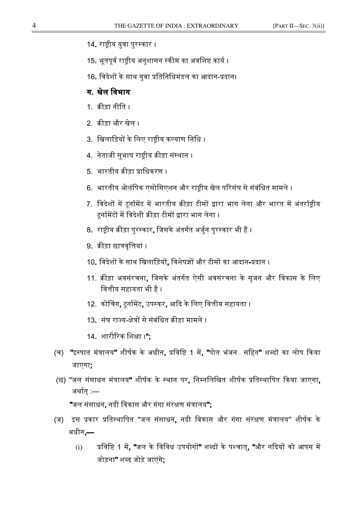
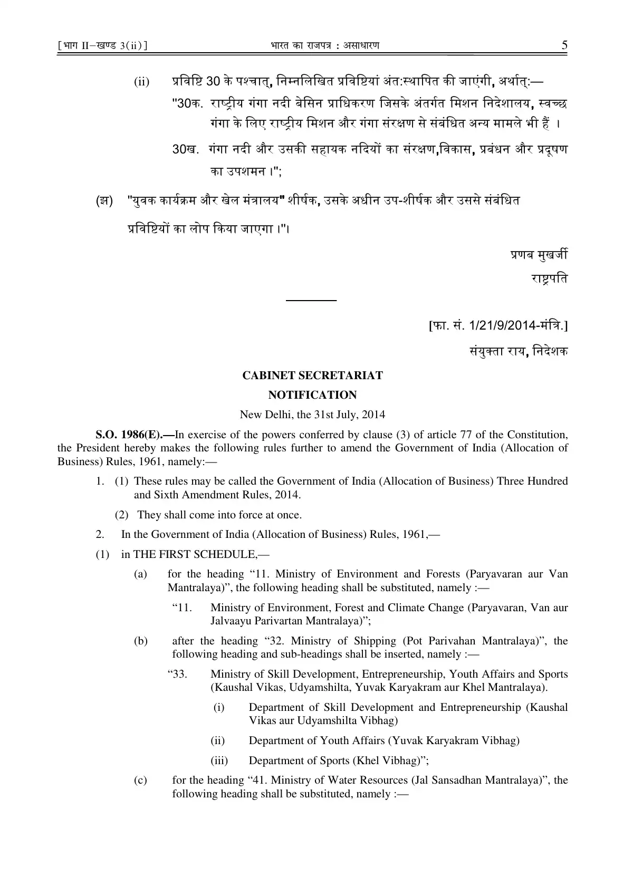
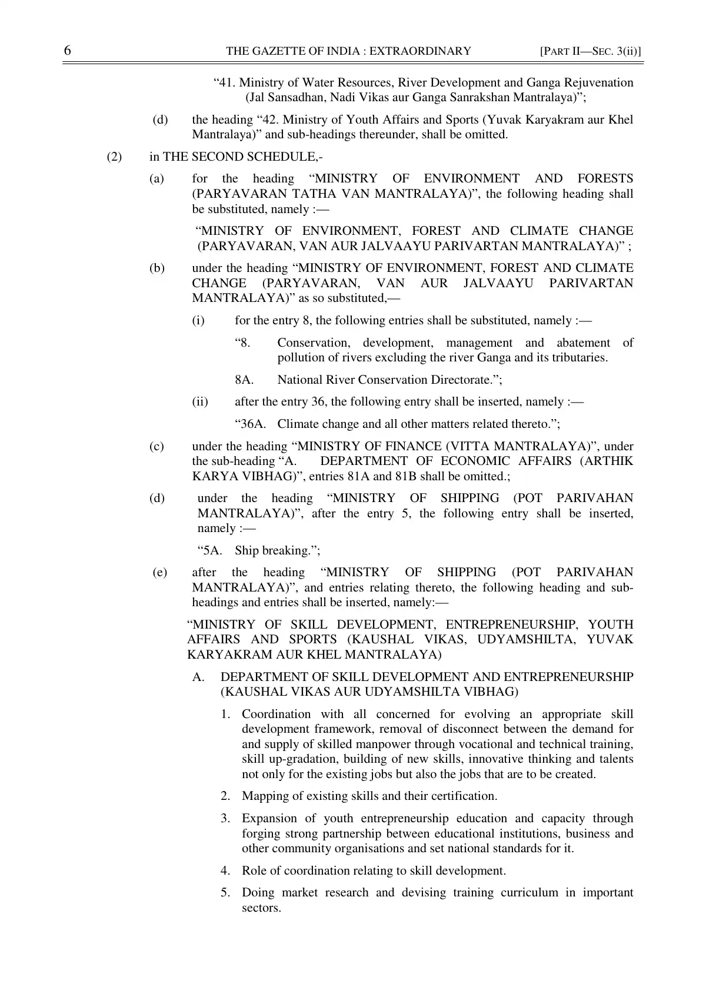
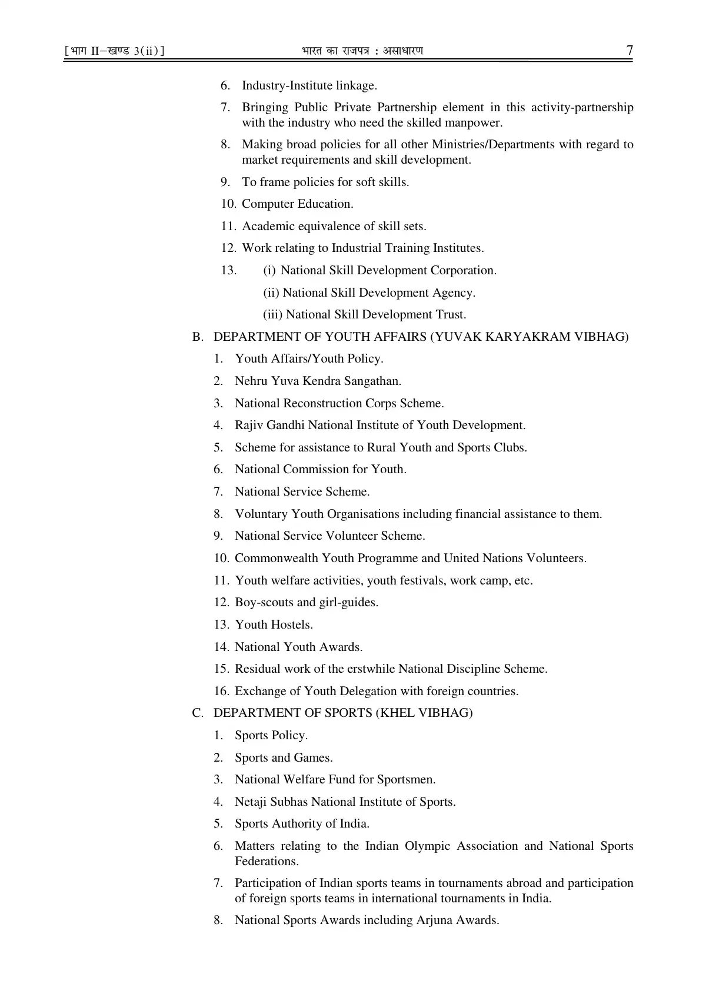
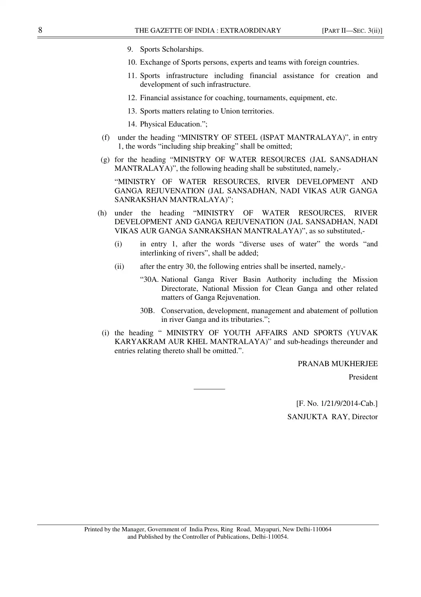

Amendment #306 (S.O. 1986(E), 2014)
15 changes: 4 to the First Schedule, 11 to the Second Schedule. 15 applied
What it did to the ministries
- renamedMinistry of Environment and Forests is renamed Ministry of Environment, Forest and Climate Change change 1, 5, 6, 7 · histories: Environment & Climate
- renamedMinistry of Youth Affairs and Sports is renamed Ministry of Skill Development, Entrepreneurship, Youth Affairs and Sports change 2, 4, 10 · histories: Skills, Youth & Sports
- renamedMinistry of Water Resources is renamed Ministry of Water Resources, River Development and Ganga Rejuvenation change 3, 12, 13, 14 · histories: Jal Shakti
- grewMinistry of Skill Development, Entrepreneurship, Youth Affairs and Sports grows from 31 to 43 subjects change 2, 4, 10 · histories: Skills, Youth & Sports
The order, page by page
Page 1 of 8

Page 2 of 8

Page 3 of 8

Page 4 of 8

Page 5 of 8

123Schedule 1 › Ministry of Environment and Forests
- 11. Ministry of Environment, Forest and Climate Change
applied at schedule 1 › ministry 11 in the Rules after #306
after Schedule 1 › Ministry of Shipping
- 33. Ministry of Skill Development, Entrepreneurship, Youth Affairs and Sports
- i. Department of Skill Development and Entrepreneurship
- ii. Department of Youth Affairs
- iii. Department of Sports
applied at schedule 1 › ministry 33 in the Rules after #306
Schedule 1 › Ministry of Water Resources
- 41. Ministry of Water Resources, River Development and Ganga Rejuvenation
applied at schedule 1 › ministry 41 in the Rules after #306
Page 6 of 8

45678910Schedule 1 › Ministry of Youth Affairs and Sports
applied at schedule 1 › ministry 42 in the Rules after #306
Schedule 2 › MINISTRY OF ENVIRONMENT AND FORESTS
- MINISTRY OF ENVIRONMENT, FOREST AND CLIMATE CHANGE
applied at schedule 2 › ministry MINISTRY OF ENVIRONMENT, FOREST AND CLIMATE CHANGE in the Rules after #306
Schedule 2 › MINISTRY OF ENVIRONMENT, FOREST AND CLIMATE CHANGE › entry 8
- 8. Conservation, development, management and abatement of pollution of rivers excluding the river Ganga and its tributaries.
- 8A. National River Conservation Directorate.
applied at schedule 2 › ministry MINISTRY OF ENVIRONMENT, FOREST AND CLIMATE CHANGE › entry 8 in the Rules after #306
after Schedule 2 › MINISTRY OF ENVIRONMENT, FOREST AND CLIMATE CHANGE › entry 36
- 36A. Climate change and all other matters related thereto.
applied at schedule 2 › ministry MINISTRY OF ENVIRONMENT, FOREST AND CLIMATE CHANGE › entry 36A in the Rules after #306
Schedule 2 › MINISTRY OF FINANCE › DEPARTMENT OF ECONOMIC AFFAIRS › entry 81A; Schedule 2 › MINISTRY OF FINANCE › DEPARTMENT OF ECONOMIC AFFAIRS › entry 81B
applied at schedule 2 › ministry MINISTRY OF FINANCE › department A › group_heading VIII › entry 81A in the Rules after #306
after Schedule 2 › MINISTRY OF SHIPPING › entry 5
- 5A. Ship breaking.
applied at schedule 2 › ministry MINISTRY OF SHIPPING › group_heading I › entry 5A in the Rules after #306
after Schedule 2 › MINISTRY OF SHIPPING
- MINISTRY OF SKILL DEVELOPMENT, ENTREPRENEURSHIP, YOUTH AFFAIRS AND SPORTS
- A. DEPARTMENT OF SKILL DEVELOPMENT AND ENTREPRENEURSHIP
- 1. Coordination with all concerned for evolving an appropriate skill development framework, removal of disconnect between the demand for and supply of skilled manpower through vocational and technical training skill up-gradation, building of new skills, innovative thinking and talents not only for…
- 2. Mapping of existing skills and their certification.
- 3. Expansion of youth entrepreneurship education and capacity through forging strong partnership between educational institutions, business and other community organisations and set national standards for it.
- 4. Role of coordination relating to skill development.
and 44 more
- 5. Doing market research and devising training curriculum in important sectors.
- 6. Industry-Institute linkage.
- 7. Bringing Public Private Partnership element in this activity-partnership with the industry who need the skilled manpower.
- 8. Making broad policies for all other Ministries/Departments with regard to market requirements and skill development.
- 9. To frame policies for soft skills.
- 10. Computer Education.
- 11. Academic equivalence of skill sets.
- 12. Work relating to Industrial Training Institutes.
- 13.
- i. National Skill Development Corporation.
- ii. National Skill Development Agency.
- iii. National Skill Development Trust.
- B. DEPARTMENT OF YOUTH AFFAIRS
- 1. Youth Affairs/Youth Policy.
- 2. Nehru Yuva Kendra Sangathan.
- 3. National Reconstruction Corps Scheme.
- 4. Rajiv Gandhi National Institute of Youth Development.
- 5. Scheme for assistance to Rural Youth and Sports Clubs.
- 6. National Commission for Youth.
- 7. National Service Scheme.
- 8. Voluntary Youth Organisations including financial assistance to them.
- 9. National Service Volunteer Scheme.
- 10. Commonwealth Youth Programme and United Nations Volunteers.
- 11. Youth welfare activities, youth festivals, work camp, etc.
- 12. Boy-scouts and girl-guides.
- 13. Youth Hostels.
- 14. National Youth Awards.
- 15. Residual work of the erstwhile National Discipline Scheme.
- 16. Exchange of Youth Delegation with foreign countries.
- C. DEPARTMENT OF SPORTS
- 1. Sports Policy.
- 2. Sports and Games.
- 3. National Welfare Fund for Sportsmen.
- 4. Netaji Subhas National Institute of Sports.
- 5. Sports Authority of India.
- 6. Matters relating to the Indian Olympic Association and National Sports Federations.
- 7. Participation of Indian sports teams in tournaments abroad and participation of foreign sports teams in international tournaments in India.
- 8. National Sports Awards including Arjuna Awards.
- 9. Sports Scholarships.
- 10. Exchange of Sports persons, experts and teams with foreign countries.
- 11. Sports infrastructure including financial assistance for creation and development of such infrastructure.
- 12. Financial assistance for coaching, tournaments, equipment, etc.
- 13. Sports matters relating to Union territories.
- 14. Physical Education.
applied at schedule 2 › ministry MINISTRY OF SKILL DEVELOPMENT, ENTREPRENEURSHIP, YOUTH AFFAIRS AND SPORTS in the Rules after #306
read page break
Page 7 of 8

Page 8 of 8

1112131415Schedule 2 › MINISTRY OF STEEL › entry 1
applied at schedule 2 › ministry MINISTRY OF STEEL › entry 1 in the Rules after #306
Schedule 2 › MINISTRY OF WATER RESOURCES
- MINISTRY OF WATER RESOURCES, RIVER DEVELOPMENT AND GANGA REJUVENATION
applied at schedule 2 › ministry MINISTRY OF WATER RESOURCES, RIVER DEVELOPMENT AND GANGA REJUVENATION in the Rules after #306
Schedule 2 › MINISTRY OF WATER RESOURCES, RIVER DEVELOPMENT AND GANGA REJUVENATION › entry 1
for “diverse uses of water” read “diverse uses of water and interlinking of rivers”
applied at schedule 2 › ministry MINISTRY OF WATER RESOURCES, RIVER DEVELOPMENT AND GANGA REJUVENATION › group_heading I › entry 1 in the Rules after #306
after Schedule 2 › MINISTRY OF WATER RESOURCES, RIVER DEVELOPMENT AND GANGA REJUVENATION › entry 30
- 30A. National Ganga River Basin Authority including the Mission Directorate, National Mission for Clean Ganga and other related matters of Ganga Rejuvenation.
- 30B. Conservation, development, management and abatement of pollution in river Ganga and its tributaries.
applied at schedule 2 › ministry MINISTRY OF WATER RESOURCES, RIVER DEVELOPMENT AND GANGA REJUVENATION › group_heading III ›… in the Rules after #306
Schedule 2 › MINISTRY OF YOUTH AFFAIRS AND SPORTS
applied at schedule 2 › ministry in the Rules after #306
How this document was read
From the Government of India (Allocation of Business) Rules, 1961 and their amendments, as published by the Cabinet Secretariat (cabsec.gov.in), read by orgpedia. The readings of the older scanned gazettes have known gaps.